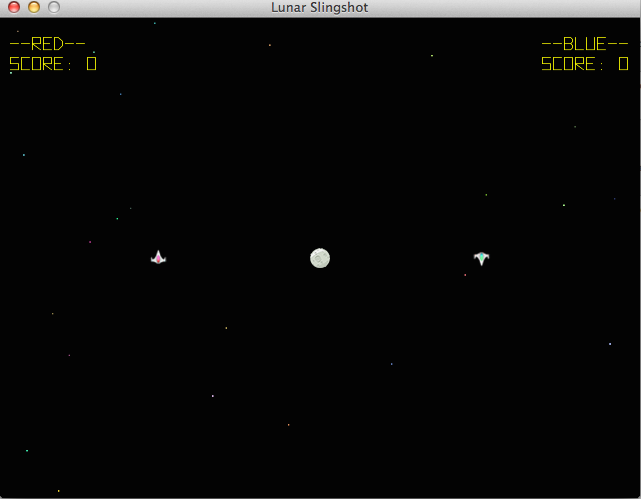

Classes In Lunar Slingshot
Posted on November 5, 2014
What is Lunar Slingshot?
Lunar Slingshot is a game I made using the Ruby Gosu gem. I started by using the example game that Gosu provides, then kept building off of that to make lunar slingshot. The game is heavily inspired by MITs "Space War!" which was the first computer game ever made.
I'm learning a lot from Lunar Slingshot. Specifically the concepts of classes and inheritance became much more clear after needing different objects to have similar but different functionality. I got help with the gravity algorithm among many other things, but the basic concept and design is my own.
This project has been the most rewarding, fun, and challenging learning experience in my journey to become a computer programmer to date. It's a work in progress, and there is a lot to add! Take a look at a stripped down version of the Player class below. Can you tell what it's doing?
class Player < FloatingObject
attr_accessor :score, :bullets_remaining
def initialize(window, player_number)
super(window)
@player_number = player_number
reset_velocity
@score = 0
@bullet_sound = Gosu::Sample.new(window, "media/Fire_sound.wav")
@fire_armed = true
@bullets_remaining = 4
end
def turn_left(do_it)
if do_it
@angle -= 2.5
end
end
def turn_right(do_it)
if do_it
@angle += 2.5
end
end
def accelerate
@vel_x += Gosu::offset_x(@angle, 0.009)
@vel_y += Gosu::offset_y(@angle, 0.009)
end
def reset_velocity
@vel_x = @vel_y = 0.0
if @player_number != 1
@angle = 180
else
@angle = 0.0
end
end
def fire
# bullet fade out control
if @bullets_remaining >= 1
@bullets_remaining -= 1
@bullet_sound.play
my_bullet = Bullet.new(@store_window, @player_number)
x_offset = Gosu::offset_x(@angle, 16)
y_offset = Gosu::offset_y(@angle, 16)
x_vel_offset = Gosu::offset_x(@angle, 1)
y_vel_offset = Gosu::offset_y(@angle, 1)
my_bullet.warp(self.x + x_offset, self.y + y_offset)
my_bullet.warp_vel(self.vel_x + x_vel_offset, self.vel_y + y_vel_offset)
my_bullet.warp_angle(@angle)
my_bullet
else
nil
end
end
end
What is a Class?
A class in ruby is a collection of data and methods. Classes wrap up all the things that an object can do, and the data that is specific to itself. Every object is an instance of a given class. When we create a new object it has access to all of the data stored in the instance variables, and also has access to all of the methods in that class. If we inherit from another class, we also gain access to all those instance variables and methods too.
What Are Instance Variables?
They are the data that is specific to a particular object. We can tell it's an instance variable by the '@' sign in front of the variable name. In Lunar Slingshot instance variables let you store data like the @position, @score, @velocity, etc. Instance variables let us store the difference between the two players. Both players are instantiated from the same class, but the instances have different data in their instance variables.
You may have noticed that we call #turn_right which changes the @angle instance variable, but where does that variable come from? The FloatingObject class that the Player class inherits from. Remember when we inherit from a class we now have access to all the instance variables and methods in that class.
What Are Instance Methods?
They define how to manipulate the instance variables. For example when we call a method like #fire on a Player object it subtracts one from that players instance variable @bullets_remaining. If we call #accelerate we change the value of @velocity. Instance methods can simply be described as what the instance objects can do.